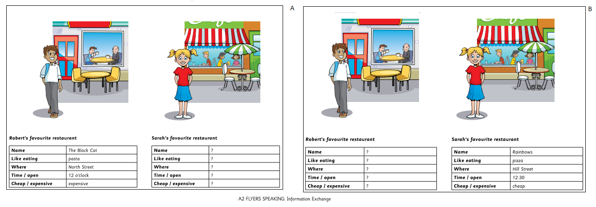
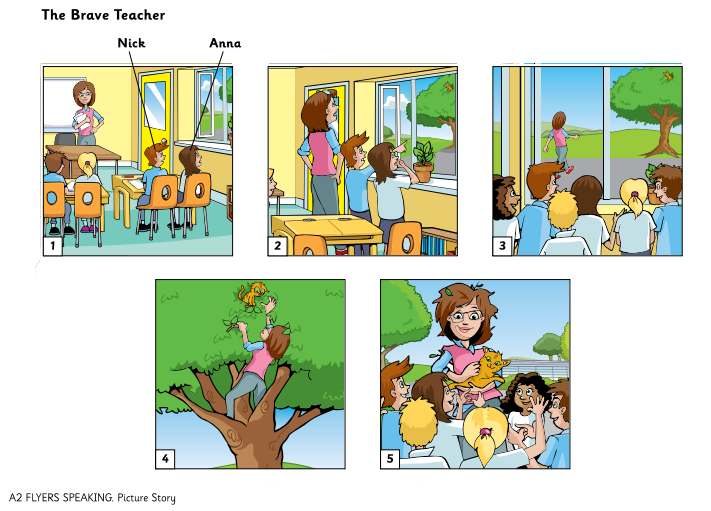

A2 Flyers - Speaking Practice
Interactive Family Practice Guide (Official Cambridge Procedures)
Summary of procedures
The usher introduces the child to the examiner. The examiner asks the child what his/her name and surname is and how old he/she is.
Gợi ý mở đầu: Phụ huynh đóng vai giám khảo hỏi các câu hỏi làm quen:
- "Hello! What's your name?"
- "What's your surname?"
- "How old are you?"
Part 1 - Find the Differences
The examiner shows the child the candidate's copy of the Find the Differences picture. The examiner then makes a series of statements about the examiner's picture and the child has to respond by making statements showing how the candidate's picture is different[cite: 39].

Mẫu hội thoại luyện tập (Examiner & Candidate):
• Examiner (Phụ huynh): "In my picture, the man is pointing at a cloud on the map."
• Candidate (Bé): "In my picture, he's pointing at the sun."[cite: 39]
Các điểm khác biệt khác để luyện tập:
- Picture A có đồng hồ góc tường chỉ 10 giờ, Picture B chỉ 3 giờ.
- Người phụ nữ ở bàn làm việc đang nghe điện thoại (Picture A) / đang gõ máy tính (Picture B).
- Trên bàn nhỏ có bánh kem (Picture A) / có đĩa chồng sách báo (Picture B).
- Người đàn ông bồi bàn mang khay hoa quả (Picture A) / mang khay nước cam (Picture B).
• Examiner (Phụ huynh): "In my picture, the man is pointing at a cloud on the map."
• Candidate (Bé): "In my picture, he's pointing at the sun."[cite: 39]
Các điểm khác biệt khác để luyện tập:
- Picture A có đồng hồ góc tường chỉ 10 giờ, Picture B chỉ 3 giờ.
- Người phụ nữ ở bàn làm việc đang nghe điện thoại (Picture A) / đang gõ máy tính (Picture B).
- Trên bàn nhỏ có bánh kem (Picture A) / có đĩa chồng sách báo (Picture B).
- Người đàn ông bồi bàn mang khay hoa quả (Picture A) / mang khay nước cam (Picture B).
Part 2 - Information Exchange
The examiner first asks the child questions related to the information the child has. The child then asks the examiner questions[cite: 39].

Vòng 1: Phụ huynh hỏi - Bé trả lời (dựa vào thông tin Sarah's restaurant):
• Phụ huynh: "What's the name of Sarah's favourite restaurant?"[cite: 39] 👉 Bé đáp: "Rainbows."[cite: 6]
• Phụ huynh: "What does she like eating there?" 👉 Bé đáp: "Pizza."[cite: 6]
• Phụ huynh: "Where is it?" 👉 Bé đáp: "Hill Street."[cite: 6]
• Phụ huynh: "What time does it open?" 👉 Bé đáp: "12.30."[cite: 6]
• Phụ huynh: "Is it cheap or expensive?" 👉 Bé đáp: "Cheap."[cite: 6]
Vòng 2: Bé đặt câu hỏi - Phụ huynh trả lời (dựa vào thông tin Robert's restaurant):
• Bé hỏi: "What's the name of Robert's favourite restaurant?"[cite: 5, 39] 👉 Phụ huynh đáp: "The Black Cat."[cite: 5]
• Bé hỏi: "What does he like eating?" 👉 Phụ huynh đáp: "Pasta."[cite: 5]
• Bé hỏi: "Where is it?" 👉 Phụ huynh đáp: "North Street."[cite: 5]
• Phụ huynh: "What's the name of Sarah's favourite restaurant?"[cite: 39] 👉 Bé đáp: "Rainbows."[cite: 6]
• Phụ huynh: "What does she like eating there?" 👉 Bé đáp: "Pizza."[cite: 6]
• Phụ huynh: "Where is it?" 👉 Bé đáp: "Hill Street."[cite: 6]
• Phụ huynh: "What time does it open?" 👉 Bé đáp: "12.30."[cite: 6]
• Phụ huynh: "Is it cheap or expensive?" 👉 Bé đáp: "Cheap."[cite: 6]
Vòng 2: Bé đặt câu hỏi - Phụ huynh trả lời (dựa vào thông tin Robert's restaurant):
• Bé hỏi: "What's the name of Robert's favourite restaurant?"[cite: 5, 39] 👉 Phụ huynh đáp: "The Black Cat."[cite: 5]
• Bé hỏi: "What does he like eating?" 👉 Phụ huynh đáp: "Pasta."[cite: 5]
• Bé hỏi: "Where is it?" 👉 Phụ huynh đáp: "North Street."[cite: 5]
Part 3 - Picture Story ("The Brave Teacher")
The examiner tells the child the name of the story and describes the first picture. The examiner then asks the child to continue telling the story[cite: 39].

Giám khảo mở đầu:
"These pictures tell a story. It's called 'The Brave Teacher'. Just look at the pictures first. (Pause) Nick and Anna are looking out of the classroom window. The teacher isn't happy because they're not doing their work. Now you continue telling the story."[cite: 39]
Gợi ý câu chuyện cho từng bức tranh (Bé tham khảo):
• Picture 2: Nick is pointing at a little cat in the tree outside. The teacher looks surprised and angry.
• Picture 3: All the children run out of the classroom through the open window to look at the cat.
• Picture 4: The brave teacher climbs up the big tree to rescue the poor little cat.
• Picture 5: The teacher is holding the happy cat safely. All the children are smiling and clapping hands for her.
"These pictures tell a story. It's called 'The Brave Teacher'. Just look at the pictures first. (Pause) Nick and Anna are looking out of the classroom window. The teacher isn't happy because they're not doing their work. Now you continue telling the story."[cite: 39]
Gợi ý câu chuyện cho từng bức tranh (Bé tham khảo):
• Picture 2: Nick is pointing at a little cat in the tree outside. The teacher looks surprised and angry.
• Picture 3: All the children run out of the classroom through the open window to look at the cat.
• Picture 4: The brave teacher climbs up the big tree to rescue the poor little cat.
• Picture 5: The teacher is holding the happy cat safely. All the children are smiling and clapping hands for her.
Part 4 - Speaking Topics (Questions about everyday life)
The examiner asks questions about a topic, e.g. 'Now let's talk about some different months of the year. What's the best month at school?'[cite: 39]
Bộ câu hỏi luyện tập thêm cùng gia đình:
1. "What's the best month at school?" 👉 (Gợi ý: May, because we have summer holidays / sports day).
2. "What do you do during your school holidays?" 👉 (Gợi ý: I travel with my family, play football, read books).
3. "Tell me about your best friend at school." 👉 (Gợi ý: Her name is Linh. She is kind and we like playing badminton together).
4. "What is your favourite subject and why?" 👉 (Gợi ý: I like English because it's fun and I can watch cartoons).
1. "What's the best month at school?" 👉 (Gợi ý: May, because we have summer holidays / sports day).
2. "What do you do during your school holidays?" 👉 (Gợi ý: I travel with my family, play football, read books).
3. "Tell me about your best friend at school." 👉 (Gợi ý: Her name is Linh. She is kind and we like playing badminton together).
4. "What is your favourite subject and why?" 👉 (Gợi ý: I like English because it's fun and I can watch cartoons).